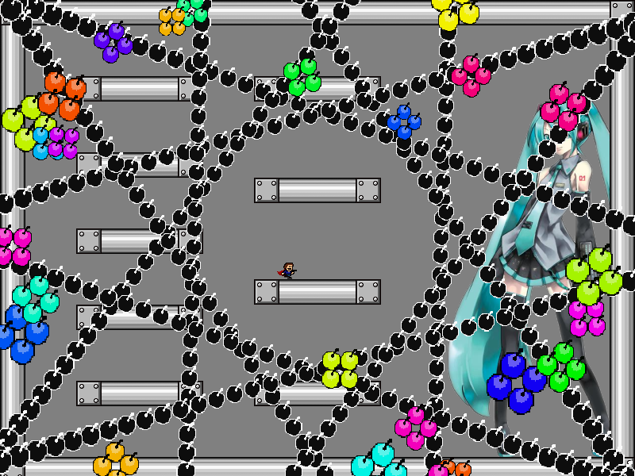
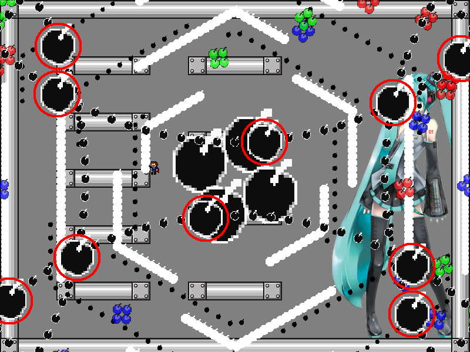
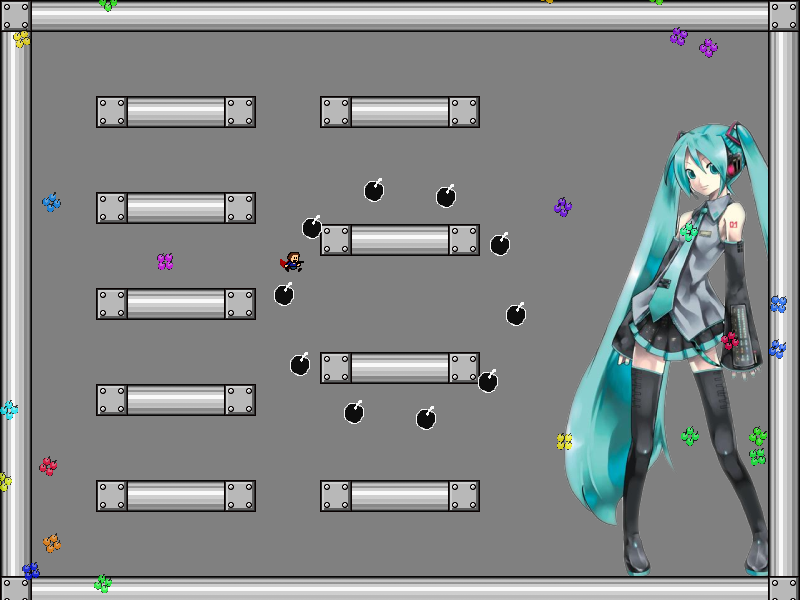

| creator | segment | label | jump |
|---|---|---|---|
| NN | 0:23.20~0:24.10 | R*A | double |
2-4の解答に対応する、角度と回転方向がランダムな弾幕です。
円形弾幕が画面をループした際の形状から、元の形状を予測することを目的としています。
0:22.20~0:23.20において画面の各辺から出現する円弧状弾幕に関して、これらのうち弾の大きさが変化するものは0:23.20において画面中央から出現する円形弾幕が画面をループした際の形状を示しています（fig.2-5.1.a, fig.2-5.1.b）。


また、0:22.20~0:23.20において滞空する際、左列3段目の足場の壁に触れた状態で最大ジャンプを繰り出すことでいかなる場合においても対応できることを利用することで攻略がしやすくなるかもしれません。